![Demetori - Yumeshoushitsu ~ Lost Dream (Cut ver.) ([Lily_White]) [Stage 7]](./HSC42024GF.covers/2-4514578.jpg)
| # | BID | Beatmap Info | CS | HP | OD | AR | Hit Length | BPM | Stars | Notes |
|---|---|---|---|---|---|---|---|---|---|---|
| 1 | 2905151 | 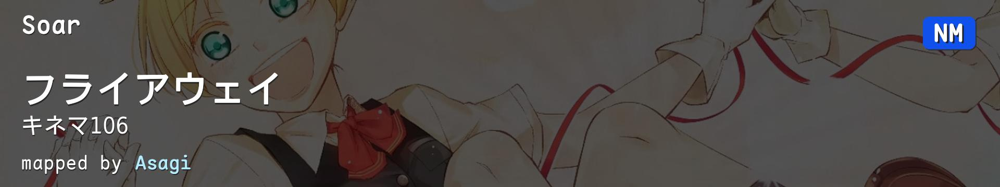 | 4.20 | 7.0 | 9.20 | 9.40 | 3:30 (1290x) | 180.00 | 6.16 | Nominators: Mordred |
| 2 | 4514578 | |
4.00 | 5.0 | 9.00 | 9.40 | 2:46 (1688x) | 182.00 | 6.2 | 扭死你们 |
| 3 | 4089267 | 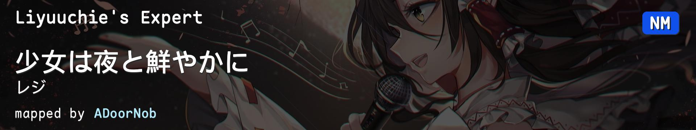 | 4.00 | 6.0 | 8.80 | 9.20 | 3:17 (1425x) | 140.08 | 5.6 | BPM原来不是整数 |
| 4 | 4284810 | 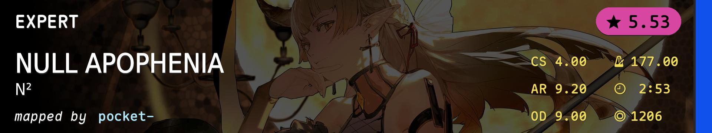 | 4.00 | 5.0 | 9.00 | 9.20 | 2:53 (1206x) | 177.00 | 5.53 | 什么逼节奏啊 |
| 5 | 2557463 | 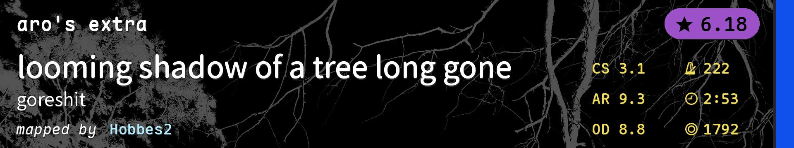 | 3.10 | 5.0 | 8.80 | 9.30 | 2:53 (1792x) | 222.00 | 6.18 | 有点累 |
| 6 | 2632756 | 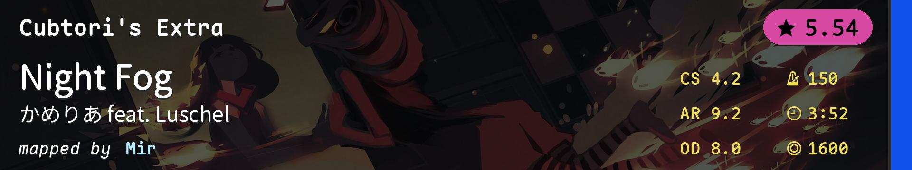 | 4.20 | 5.0 | 8.00 | 9.20 | 3:52 (1600x) | 150.00 | 5.54 | 一起摇摆 |
| 7 | 3713370 | 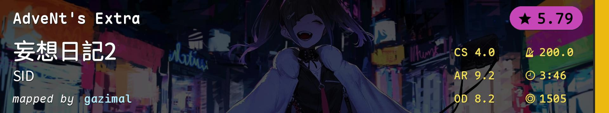 | 4.00 | 5.2 | 8.20 | 9.20 | 3:46 (1505x) | 200.00 | 5.79 | 你染上男人唱歌了？ |
| 8 | 3376899 | 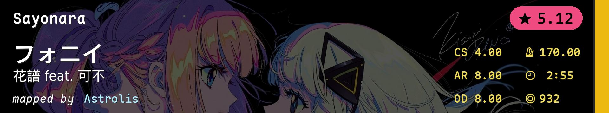 | 4.00 | 5.5 | 8.00 | 8.00 | 2:55 (932x) | 170.00 | 5.12 | 个人差无比巨大 |
| 9 | 1865093 | 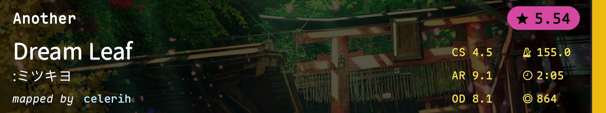 | 4.50 | 5.0 | 8.10 | 9.10 | 2:05 (864x) | 155.00 | 5.54 | 悠扬滴小曲儿 |
| 10 | 4001188 | 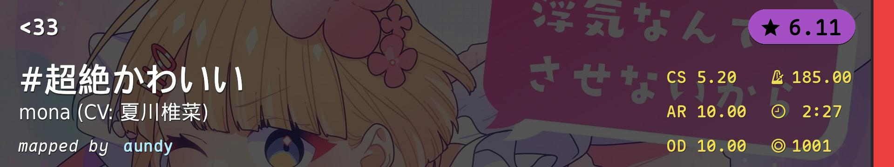 | 5.20 | 7.0 | 10.00 | 10.00 | 2:27 (1001x) | 185.00 | 6.11 | 你染上小妹妹唱歌了？ |
| 11 | 3157348 | 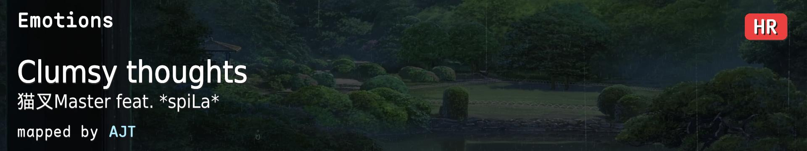 | 6.50 | 8.4 | 10.00 | 10.00 | 1:55 (558x) | 153.00 | 5.75 | 硬控双眼两分钟 |
| 12 | 3171859 | 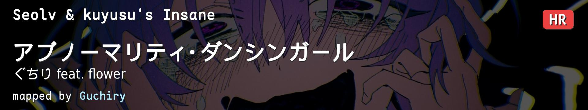 | 4.94 | 7.0 | 10.00 | 10.00 | 3:01 (1278x) | 220.00 | 5.55 | 原本是在第二周的图怎么出现在了这里 |
| 13 | 2287170 | 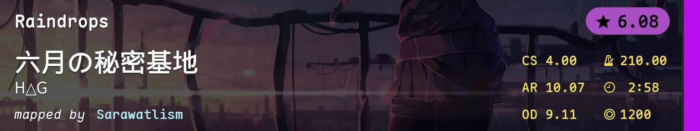 | 4.00 | 7.0 | 9.11 | 10.07 | 2:58 (1200x) | 210.00 | 6.08 | 历史包袱 |
| 14 | 3155518 | 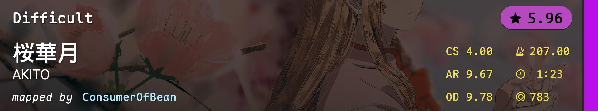 | 4.00 | 5.0 | 9.78 | 9.67 | 1:23 (783x) | 207.00 | 5.96 | 小心短滑条 |
| 15 | 2813113 | 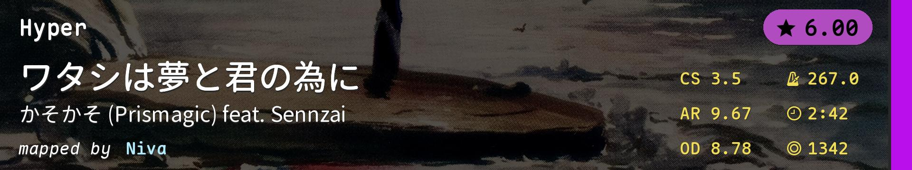 | 3.50 | 5.0 | 8.78 | 9.67 | 2:42 (1342x) | 267.00 | 6.0 | 这图是俺拾得嘞 |
| 16 | 4102579 | 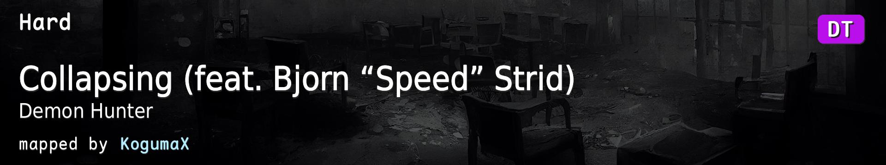 | 4.00 | 4.0 | 8.44 | 9.00 | 2:18 (1011x) | 249.00 | 5.36 | 有点带劲 |
| 17 | 2588362 | 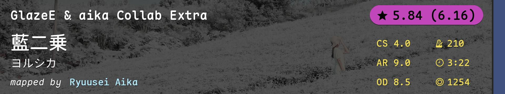 | 4.00 | 7.0 | 8.50 | 9.00 | 3:22 (1254x) | 210.00 | 5.84(6.16) | 好玩 |
| 18 | 3699176 | 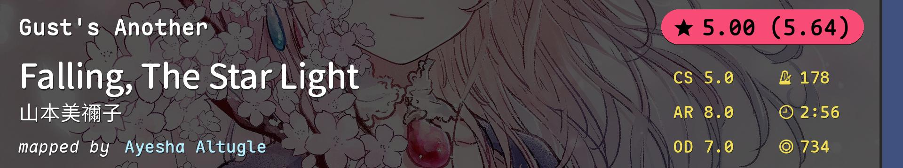 | 5.00 | 6.0 | 7.00 | 8.00 | 2:56 (734x) | 178.00 | 5.0(5.64) | 说实话没看懂中间 |
| 19 | 3234400 | 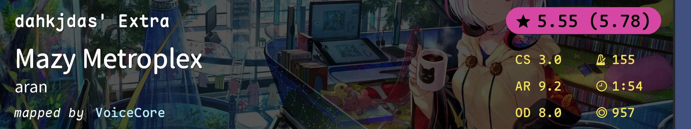 | 3.00 | 5.0 | 8.00 | 9.20 | 1:54 (957x) | 155.00 | 5.55(5.78) | 啊↗诶→哦↘啊↗啊↗啊↗啊↗啊↗啊↗啊↗啊↗啊↗啊↗诶→哦↘欸↗欸↗欸↗欸↗欸↗欸↗欸↗欸↗额→额→额→啊噫↗啊噫↗啊噫↗啊噫↗啊噫↗啊噫↗啊噫↗啊噫↗啊噫↗啊噫↗啊噫↗嗷↘嗷↘嗷↘嗷↘嗷↘嗷↘嗷↘嗷↘嗷↘ |
| 20 | 1609721 | 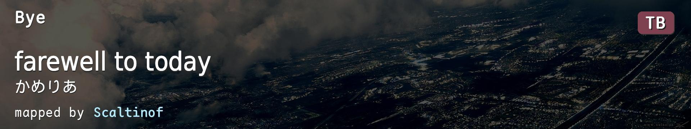 | 4.20 | 6.0 | 8.00 | 9.50 | 5:06 (2457x) | 170.00 | 6.13 | 我认为TB是一个巨大的哈基米 |